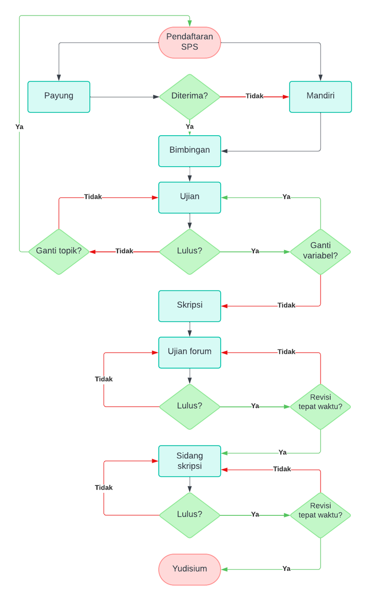

2 Skripsi dalam Kurikulum Fakultas Psikologi
Kurikulum pendidikan Fakultas Psikologi Universitas YARSI masih menjadikan Skripsi sebagai syarat wajib kelulusan mahasiswa. Untuk dapat mengerjakan skripsi, setiap mahasiswa perlu memahami informasi-informasi administratif yang menyangkut MK Skripsi. Informasi ini mencakup beban SKS, persyaratan akademik dan administrasi, serta prosedur dan alur kerja pengerjaan skripsi. Diagram alir (flow chart) prosedur pengerjaan skripsi dapat dilihat pada Gambar 1.
2.1 Kedudukan Skripsi dan Bobot SKS
Skripsi memiliki kedudukan yang sama dengan mata kuliah lain, hanya berbeda dalam bentuk, proses belajar-mengajar dan cara penilaiannya. Bobot skripsi adalah 8 SKS, yang setara dengan kegiatan akademik setiap minggu 40 jam. Selama satu semester, bobot MK Skripsi setara dengan 640 jam pembelajaran (16 pertemuan).
2.2 Persyaratan Mata Kuliah Skripsi
Persyaratan akademik
Untuk menempuh mata kuliah skripsi, mahasiswa harus memenuhi persyaratan akademik sebagai berikut:
- Telah lulus Mata Kuliah Seminar Proposal Skripsi (SPS) pada semester sebelumnya,
- Telah menyelesaikan SKS dalam jumlah tertentu sesuai prasyarat dari Ketua Program Studi/Wakil Dekan 1
Persyaratan administratif
Untuk menempuh MK Skripsi, mahasiswa harus memenuhi persyaratan administratif sebagai berikut:
Telah memenuhi persyaratan akademik, sebagaimana tertera pada poin 1 di atas
Memiliki KRS semester yang berjalan yang mencantumkan MK Skripsi dan telah ditandatangani oleh Dosen Pembimbing Akademik (DPA)
2.3 Waktu Pelaksanaan Mata Kuliah Skripsi
Batas Waktu Mata Kuliah Skripsi
Tidak ada batasan maksimal bagi mahasiswa untuk dapat melaksanakan dan menyelesaikan skripsi. Mahasiswa dapat tetap mengambil MK Skripsi selama memenuhi persyaratan administrasi perkuliahan secara umum (lihat Buku Panduan Akademik untuk membaca persyaratan administrasi ini). Meskipun demikian, waktu pelaksanaan MK Skripsi idealnya ditempuh dalam selama-lamanya 2 (dua) semester. Setiap semesternya, mahasiswa wajib mengisi Kartu Rencana Studi (KRS) untuk melakukan daftar ulang pada MK Skripsi.
Perpanjangan Waktu Mata Kuliah Skripsi
Apabila dalam jangka waktu 2 (dua) semester mahasiswa belum mampu menyelesaikan skripsinya, maka waktu penyelesaian MK Skripsi dapat diperpanjang hingga habis masa studi maksimum sesuai kebijakan Program Studi Sarjana. Perpanjangan waktu MK Skripsi dapat dilakukan dengan mencantumkan kembali MK Skripsi di KRS. Mahasiswa yang belum menyelesaikan skripsi hingga habis masa studi maksimumnya akan dinyatakan Drop Out (DO).
Mengulang Sidang Ujian Skripsi
- Mahasiswa yang dinyatakan tidak lulus pada sidang ujian skripsi wajib mengulang Sidang Ujian Skripsi dengan melakukan perbaikan pada skripsi dengan waktu selambat-lambatnya 30 hari (1 bulan kalender) sejak diselenggarakannya sidang skripsi mahasiswa yang bersangkutan.
- Apabila dalam Sidang Ujian Skripsi mahasiswa dinyatakan lulus, tetapi pengumpulan perbaikan (revisi) skripsi melebihi 30 hari (1 bulan kalender) setelah penyelenggaraan sidang, maka kelulusan MK Skripsi mahasiswa dibatalkan dan mahasiswa diwajibkan untuk mengulang ujian sidang skripsi. Mahasiswa dapat mengajukan kembali Sidang Ujian Skripsi dalam waktu 14 hari kerja setelah tenggat waktu pengumpulan perbaikan skripsi sebelumnya. Mahasiswa dapat lulus pada semester berjalan apabila telah mengumpulkan perbaikan skripsi sebelum batas waktu yudisium yang telah ditentukan.
- Mahasiswa yang tidak hadir dalam Sidang Ujian Skripsi yang telah dijadwalkan karena alasan apapun akan dinyatakan tidak lulus ujian dan menerima konsekuensi seperti telah dijelaskan pada poin a.
2.4 Prosedur dan Alur Kerja Mata Kuliah Skripsi
Pengajuan dan Pendaftaran
Langkah awal pengerjaan skripsi dimulai dari pengajuan atau pendaftaran tema dan topik proposal penelitian di Mata Kuliah SPS. Terdapat dua skema pendaftaran tema dan topik penelitian, yaitu skema penelitian mandiri dan skema penelitian payung. Pada skema mandiri, mahasiswa mengajukan tema dan topik penelitian sesuai dengan minat masing-masing. Sedangkan, pada skema payung, tema dan topik penelitian ditentukan oleh dosen koordinator penelitian dari setiap payung penelitian. Setiap mahasiswa dapat mengajukan atau mendaftar paling banyak dua tema penelitian saat pendaftaran proposal penelitian, baik itu pada skema mandiri maupun skema payung.
Skema payung bersifat rekrutmen terbuka, yang berarti seluruh mahasiswa memiliki hak untuk mendaftar selama memenuhi persyaratan yang ditetapkan oleh dosen koordinator penelitian payung. Namun, kuota mahasiswa bimbingan pada skema payung terbatas, sehingga dosen koordinator penelitian payung perlu melakukan seleksi terhadap mahasiswa yang mendaftar. Mahasiswa yang mendaftar skema payung tetapi dinyatakan tidak lolos seleksi akan diminta untuk melakukan pengajuan tema skema penelitian mandiri.
Bimbingan SPS
Penentuan pembimbing SPS dan skripsi dilakukan oleh Wakil Dekan II berdasarkan pembahasan di Komite Skripsi dan bersifat mutlak. Penggantian pembimbing hanya dimungkinkan apabila (a) mahasiswa mengajukan permohonan tertulis penggantian pembimbing, (b) dosen pembimbing mengajukan permohonan tertulis penggantian mahasiswa bimbingan, atau (c) dosen pemimbing berhalangan untuk melakukan pembimbingan dalam waktu yang lebih dari 3 bulan, misalnya, dosen menjalani tugas belajar. Proses penggantian pembimbing harus mengikuti SOP yang telah ditetapkan. Proses bimbingan berlangsung selama semester berjalan, baik itu secara daring maupun luring. Mahasiswa wajib mencatat setiap proses bimbingan di log book bimbingan yang diparaf oleh pembimbing. Waktu dan durasi bimbingan ditentukan oleh masing-masing mahasiswa dan dosen pembimbing. Baik dosen ataupun mahasiswa diharapkan hadir dalam proses bimbingan pada waktu yang telah ditentukan.
Ujian SPS
Seperti halnya mata kuliah lain, evaluasi terhadap proses pembelajaran di MK SPS dilakukan melalui mekanisme ujian, dalam hal ini berbentuk ujian komprehensif. Ujian MK SPS terdiri dari Ujian Tengah Semester (UTS) yang mencakup pengujian komprehensi mengenai Bab 1 proposal penelitian dan Ujian Akhir Semester yang mencakup pengujian komprehensi mengenai Bab 1 hingga Bab 3 proposal penelitian. Penguji UTS dan UAS MK SPS terdiri dari satu orang dosen yang ditentukan oleh Wakil Dekan II melalui pertimbangan Komite Skripsi. Setiap ujian memiliki komponen penilaian masing-masing. Rubrik komponen penilaian UTS dapat dilihat di Lampiran 1, sedangkan rubrik komponen penelitian UAS dapat dilihat di Lampiran 2.
Kelulusan MK SPS ditentukan berdasarkan nilai ujian. Mahasiswa dinyatakan lulus apabila memperoleh nilai huruf minimal C. Mahasiswa yang dinyatakan tidak lulus wajib mengulang ujian MK SPS pada semester berikutnya. Mahasiswa yang tidak lulus hanya perlu melakukan UAS pada ujian berikutnya jika topik penelitiannya tidak berubah. Apabila mahasiswa yang tidak lulus ingin mengajukan permohonan penggantian topik atau judul penelitian, maka ia harus mengulang proses pendaftaran dari tahap awal.
Untuk dapat mengikuti ujian MKS SPS, terdapat sejumlah syarat yang harus dipenuhi oleh mahasiswa, yaitu:
- Mengumpulkan naskah lengkap (Bab 1 untuk UTS; Bab 1-3 untuk UAS) kepada petugas Tata Usaha Bagian Akademik dalam format digital (format file .docx atau .pdf)
- Menyerahkan bukti pemeriksaan kemiripan (similarity check) yang dilakukan melalui akun fakultas (oleh Wakil Dekan II) dengan tingkat kemiripan maksimal sebesar 25%.
- Menyerahkan lembar persetujuan pembimbing yang telah ditandatangani sebagai bukti bahwa pembimbing SPS menyetujui naskah telah layak untuk diuji.
- Menyerahkan bukti kehadiran bimbingan setidak-tidaknya 7 (tujuh) kali untuk UTS dan 14 (empat belas) kali untuk UAS, termasuk kehadiran di kelas besar.
Jadwal ujian, baik UTS maupun UAS, ditetapkan oleh Wakil Dekan II dengan mempertimbangkan periode UTS dan UAS MK lainnya. Durasi ujian selama 30 menit untuk UTS dan 60 menit untuk UAS. Penilaian UTS diberikan hanya oleh dosen penguji, sedangkan UAS diberikan oleh penguji dan pembimbing.
Bimbingan Skripsi
Mahasiswa yang dinyatakan lulus MK SPS dapat mendaftar MK Skripsi di semester selanjutnya. Pada MK Skripsi, fokus utama adalah pengambilan data penelitian berdasarkan proposal yang telah diuji dan penulisan naskah skripsi. Selama menjalani MK Skripsi, mahasiswa diwajibkan terus melakukan bimbingan dengan pembimbing skripsi dengan jumlah minimal 14 pertemuan.
Dalam perjalanannya, mahasiswa dibolehkan untuk mengubah variabel penelitian yang diajukan dalam proposal berdasarkan sejumlah pertimbangan, misalnya masukan dari penguji SPS. Dalam kasus ini, mahasiswa perlu menjalani ujian kelayakan terhadap proposal penelitiannya yang baru. Mekanisme ujian kelayakan ini serupa dengan UAS MK SPS yang telah dijelaskan di bagian sebelumnya.
Pada masa bimbingan skripsi, Komite Skripsi akan menentukan dewan pembimbing skripsi. Setiap mahasiswa akan dibimbing oleh dua pembimbing, yaitu pembimbing ilmu dan pembimbing agama. Tugas utama pembimbing agama adalah memberikan panduan dan arahan dalam penulisan skripsi terutama di bagian relevansi topik penelitian dengan nilai-nilai dan ajaran agama Islam. Selain itu, pembimbing agama juga memandu mahasiswa untuk mengintegrasikan perspektif Agama Islam dalam menginterpretasikan hasil dan temuan peneltiian yang akan dituangkan dalam Bab 5 Hasil Penelitian Menurut Tinjauan Islam. Penggantian pembimbing, baik pembimbing ilmu dan pembimbing agama, dapat diajukan oleh mahasiswa dengan menyerahkan surat permohonan penggantian pembimbing, sesuai dengan SOP yang telah disusun.
Ujian Forum
Setelah mahasiswa selesai menyusun naskah skripsi dengan lengkap, maka ia dapat mengajukan pendaftaran ujian forum. Secara umum, ujian forum merupakan ujian komprehensi yang bertujuan untuk mengevaluasi kelayakan naskah skripsi untuk kemudian dipertahankan di sidang skripsi. Wakil Dekan II menetapkan satu orang dosen yang akan berperan sebagai dosen pembahas dalam ujian forum.
Untuk dapat mengikuti ujian forum, selain naskah skripsi, mahasiswa juga perlu menyerahkan sejumlah dokumen lainnya, yaitu:
- Berkas kelayakan etik penelitian yang dikeluarkan oleh Lembaga Penelitian Universitas YARSI atau lembaga etik lainnya.
- Bukti hasil pemeriksaan kemiripan (similarity check) yang dilakukan melalui akun fakultas dengan tingkat kemiripan maksimal sebesar 25%
- Bukti persetujuan ujian forum oleh pembimbing ilmu
Ujian forum dapat dilaksanakan secara terbuka maupun tertutup, tergantung dari kesepakatan antara pembimbing skripsi dan dosen pembahas dengan pertimbangan utama mengenai sensitivitas topik dan data penelitian. Pada ujian forum terbuka, seluruh mahasiswa Fakultas Psikologi berkesempatan untuk ikut hadir dan terlibat aktif dalam pembahasan pada sesi tanya-jawab. Sedangkan, dalam ujian forum tertutup, mahasiswa yang diuji hanya dapat mengundang dua orang mahasiswa lainnya yang bertugas sebagai pembahas. Baik pada ujian forum terbuka maupun tertutup, mahasiswa yang diuji diminta untuk mengundang satu orang mahasiswa lainnya sebagai notulen sidang.
Durasi ujian forum adalah selama 90 menit, yang mencakup 15 menit paparan hasil penelitian, 10-15 menit menit sesi tanya-jawab oleh mahasiswa, dan 60-65 menit sesi tanya-jawab oleh dosen pembahas. Penilaian ujian dilakukan oleh dosen pembahas (rubrik komponen penilaian ujian forum dapat dilihat di Lampiran 3). Terdapat tiga kategori hasil penilaian kelayakan, yaitu:
- Lolos dengan perbaikan minor. Mahasiswa diberikan waktu 14 hari kalender untuk mengumpulkan naskah revisi.
- Lolos dengan perbaikan mayor. Mahasiswa diberikan waktu 30 hari kalender untuk mengumpulkan naskah revisi.
- Tidak lolos. Mahasiswa wajib mengikuti ujian forum ulang.
Mahasiswa yang tidak dapat mengumpulkan naskah revisi pada waktu yang telah ditentukan akan dinyatakan tidak lolos ujian forum. Sebagai konsekuensinya, mahasiswa harus mengikuti ujian forum ulang. Naskah revisi yang dikumpulkan harus menyertakan bukti persetujuan dari pembimbing skripsi dan dosen pembahas ujian forum.
Sidang Skripsi
Mahasiswa yang telah dinyatakan lolos ujian forum dan mengumpulkan naskah revisi pada tenggat waktu yang diberikan dapat segera mengajukan pendaftaran ujian sidang skripsi. Untuk dapat mengikuti ujian skripsi, mahasiswa harus sudah dinyatakan lulus pada seluruh mata kuliah selain Skripsi dan telah menyelesaikan seluruh administrasi keuangan. Penetapan jadwal dan dewan penguji sidang skripsi ditentukan oleh Wakil Dekan II selaku ketua Komite Skripsi. Dewan Penguji terdiri dari satu orang dosen penguji yang bertindak sebagai Ketua Dewan Penguji, dosen pembimbing ilmu sebagai Anggota Dewan Penguji I sekaligus notulen sidang, dan dosen pembimbing agama sebagai Anggota Dewan Penguji II.
Sidang skripsi berlangsung selama 90 menit, yang mencakup 15 menit paparan skripsi oleh mahasiswa dan 75 menit sesi tanya-jawab oleh Dewan Penguji. Penilaian MK Skripsi terdiri dari dua komponen utama, yaitu performa mahasiswa selama bimbingan skripsi dan performa mahasiswa dalam penulisan dan paparan skripsi (dalam sidang skripsi). Penilaian komponen performa bimbingan diberikan oleh pembimbing ilmu dan pembimbing agama, sedangkan komponen performa penulisan dan paparan skripsi dinilai oleh seluruh Dewan Penguji. Rubrik komponen penilaian sidang skripsi dapat dilihat di Lampiran 4.
Mahasiswa dinyatakan lulus ujian skripsi jika memperoleh nilai huruf serendah-rendahnya B-. Mahasiswa yang memperoleh nilai huruf lebih rendah dari B- dinyatakan tidak lulus dan wajib mengikuti sidang skripsi ulang. Mahasiswa yang telah dinyatakan lulus sidang skripsi akan diminta untuk menandatangani di atas meterai surat pernyataan yang pada intinya menyatakan kesanggupan untuk mengumpulkan naskah revisi skripsi selambat-lambatnya 30 hari kalender dari tanggal sidang skripsi. Surat pernyataan tersebut juga memuat sejumlah konsekuensi yang akan dihadapi oleh mahasiswa apabila tidak dapat mengumpulkan revisi skripsi sebelum tenggat waktu yang ditentukan, termasuk di antaranya adalah pembatalan kelulusan sidang skripsi dan kewajiban membayar penuh biaya pendidikan untuk satu semester berikutnya.
Yudisium
Yudisium adalah penentuan nilai atau kelulusan suatu ujian sarjana di perguruan tinggi. Seluruh mahasiswa yang telah dinyatakan lulus sidang skripsi dan mengumpulkan revisinya akan diinformasikan mengenai status dan predikat kelulusannya dalam acara yudisium. Yudisium biasanya diselenggarakan di pengujung semester berjalan. Dalam acara ini juga diumumkan mengenai mahasiswa yang memperoleh penghargaan Skripsi Terbaik yang ditetapkan berdasarkan nilai ujian skripsi. Yudisium merupakan tahapan akademik terakhir sebelum wisuda.
